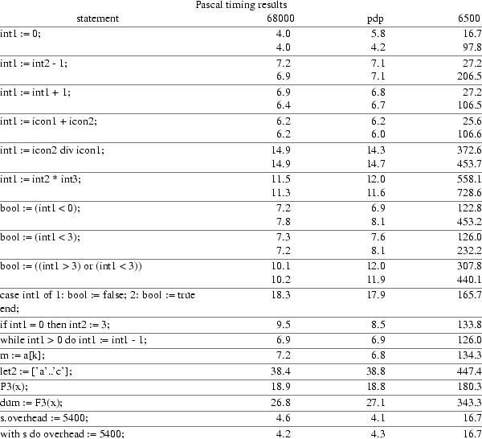
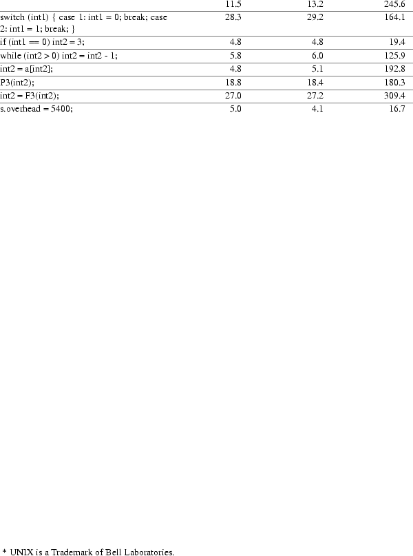
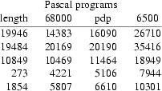
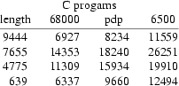
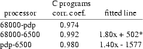

ABSTRACT
Jan van Dalen
The backend table is part of the Amsterdam Compiler Kit (ACK). It translates the intermediate language family EM to a machine code for the MCS6500 microprocessor family.
THE MCS6500 MICROPROCESSOR.
Why a back end table for the MCS6500 microprocessor family. Although the MCS6500 microprocessor family has an simple instruction set and internal structure, it is used in a variety of microcomputers and homecomputers. This is because of is low cost. As an example the Apple II, a well known and width spread microprocessor, uses the MCS6502 CPU. Also the BBC homecomputer, whose popularity is growing day by day uses the MCS6502 CPU. The BBC homecomputer is based on the MCS6502 CPU although better and stronger microprocessors are available. The designers of Acorn computer Industries have probably choosen for the MCS6502 because of the amount of software available for this CPU. Since its width spreaded use, a variaty of software will be needed for it. One can think of games!!, administration programs, teaching programs, basic interpreters and other application programs. Even do it will not be possible to run the total compiler kit on a MCS6500 based computer, it is possible to write application programs in a high level language, such as Pascal or C on a minicomputer. These application programs can be tested and compiled on that minicomputer and put in a ROM (Read Only Memory), for example, cso that it an be executed by a MCS6500 CPU. The strategy of writing testprograms on a minicomputer, compile it and then execute it on a MCS6500 based microprocessor is used by the development of the back end. The minicomputer used is M68000 based one, manufactured by Bleasdale Computer Systems Ltd.. The micro- or homecomputer used is a BBC microcomputer, manufactured by Acorn Computer Ltd..
The MCS6500 is as a family of CPU devices developed by MOS Technology [1]. The members of the MCS6500 family are the same chips in a different housing. The MCS6502, the big brother in the family, can handle 64k bytes of memory, while for example the MCS6504 can only handle 8k bytes of memory. This difference is due to the fact that the MCS6502 is in a 40 pins house and the MCS6504 has a 28 pins house, so less address lines are available.
The MCS6500 series is based on the same chip so all have the same programmable registers.
The accumulator A is the only register on which the arithmetic and logical instructions can be used. For example, the instruction ADC (add with carry) adds the contents of the accumulator A and a byte from memory or data.
As the name suggests this register can be used for some indirect addressing modes. The modes are explaned below.
This register is, just as the index register X, used for certain indirect addressing modes. These addressing modes are different from the modes which use index register X.
This is the only 16-bit register available. It is used to point to the next instruction to be carried out.
The stack pointer is an 8-bit register, so the stack can contain at most 256 bytes. The CPU always appends 00000001 as highbyte of any stack address, which means that memory locations 0100 through 01FF are permanently assigned to the stack.
The status register maintains six status flags and a
master interrupt control bit.
These are the six status flags: Carry (c) Zero (z) Overflow
(o) Sign (n) Decimal mode (d) Break (b)
The bit (i) is the master interrupt control bit.
In the MCS6500 memory space three area’s have special meaning. These area’s are:
|
1) |
Top page. |
|
2) |
Zero page. |
|
3) |
The stack. |
MCS6500 memory is divided up into pages. These pages consist 256 bytes. So in a memory address the highbyte denotes the page number and the lowbyte the offset within the page.
When a MCS6500 is restared it jumps indirect via memory address FFFC. At FFFC (lowbyte) and FFFD (highbyte) there must be the address of the bootstrap subroutine. When a break instruction (BRK) occurs or an interrupt takes place, the MCS6500 jumps indirect through memory address FFFE. FFFE and FFFF thus, must contain the address of the interrupt routine. The former only goes for maskeble interrupt. There also exist a nonmaskeble interrupt. This cause the MCS6500 to jump indirect through memory address FFFA. So the top six bytes of memory are used by the operating system and therefore not available for the back end.
This page has a special meaning in the sence that addressing this page uses special opcodes. Since a page consists of 256 bytes, only one byte is needed for addressing zero page. So an instruction which uses zero page occupies two bytes. It also uses less clock cycle’s while carrying out the instruction. Zero page is also needed when indirect addressing is used. This means that when indirect addressing is used, the address must reside in zero page (two consecutive bytes). In this case (the back end), zero page is used, for example to hold the local base, the second local base, the stack pointer etc.
The stack is described in paragraph 3.5 about the MCS6500 programmable registers.
MCS6500 memory reference instructions use direct addressing, indexed addressing, and indirect addressing.
Three-byte instructions use the second and third bytes of the object code to provide a direct 16-bit address: therefore, 65.536 bytes of memory can be addressed directly. The commonly used memory reference instructions also have a two-byte object code variation, where the second byte directly addresses one of the first 256 bytes.
In this case, the instruction has two bytes of object code. The contents of either the X or Y index registers are added to the second object code byte in order to compute a memory address. This may be illustrated as follows:
Base page, indexed addressing, as illustrated above, is wraparound - which means that there is no carry. If the sum of the index register and second object code byte contents is more than FF , the carry bit will be dicarded. This may be illustrated as follows:
In this case, the contents of either the X or Y register are added to a 16-bit direct address provided by the second and third bytes of an instruction’s object code. This may be illustrated as follows:
Instructions that use simple indirect addressing have three bytes of object code. The second and third object code bytes provide a 16-bit address; therefore, the indirect address can be located anywhere in memory. This is straightforward indirect addressing.
In this case, the object code consists of two bytes and the second object code byte provides an 8-bit address. Instructions that use pre-indexed indirect addressing add the contents of the X index register and the second object code byte to access a memory location in the first 256 bytes of memory, where the indirect address will be found:
When using pre-indexed indirect addressing, once again wraparound addition is used, which means that when the X index register contents are added to the second object code byte, any carry will be discarded. Note that only the X index register can be used with pre-indexed addressing.
In this case, the object code consists of two bytes and the second object code byte provides an 8-bit address. Now the second object code byte indentifies a location in the first 256 bytes of memory where an indirect address will be found. The contents of the Y index register are added to this indirect address. This may be illustrated as follows:
Note that only the Y index register can be used with post-indexed indirect addressing.
Although the designers of the MCS6500 CPUs family state that there is nothing very significant about the short stack (only 256 bytes) this stack caused problems for the back end. The designers say that a 256-byte stack usually is sufficient for any typical microcomputer, this is only true if the stack is used only for return addresses of the JSR (jump to subroutine) instruction. But since the EM machine is suppost to be a stack machine and high level languages need the ability of parameters and locals in there procedures and function, this short stack is unsufficiant. So an software stack is implemented in this back end, requiring two additional subroutines for stack handling. These two stack handling subroutines slow down the processing time of a program since the stack is used heavely.
Since parameters and locals of EM procedures are offseted from the localbase of that procedure, indirect addressing is havily used. Offsets are positive (for parameters) and negative (for local variables). As explaned before the addressing modes the MCS6500 have a post indexed indirect addressing mode. This addressing mode can only handle positive offsets. This raises a problem for accessing the local variables I have chosen for the next solution. A second local base is introduced. This second local base is the real local base subtracted by a constant BASE. In the present situation of the back end the value of BASE is 240. This means that there are 240 bytes reseved for local variables to be indirect addressed and 14 bytes for the parameters.
THE CODE GENERATOR.
The machine description table consists of the following sections:
|
1. |
The macro definitions. |
|
2. |
Constant definitions. |
|
3. |
Register definitions. |
|
4. |
Token definitions. |
|
5. |
Token expressions. |
|
6. |
Code rules. |
|
7. |
Move definitions. |
|
8. |
Test definitions. |
|
9. |
Stack definitions. |
The macro definitions at the top of the table are expanded by the preprocessor on occurence in the rest of the table.
There are three constants which must be defined at first. The are:
|
EM_WSIZE: |
Number of bytes in a machine word. This is the number of bytes a simple loc instruction will put on the stack. |
|
EM_PSIZE: |
Number of bytes in a pointer. This is the number of bytes a lal instruction will put on the stack. |
|
EM_BSIZE: |
Number of bytes in the hole between AB and LB. The calling sequence only saves LB on the stack so this constant is equal to the pointer size. |
The only important register definition is the definition of the registerpair AX. Since the rest of the machine’s registers Y, PC, ST serve special purposes, the code generator cannot use them.
There is a fake token. This token is put in the table, since the code generator generator complains if it cannot find one.
The token expression is also a fake one. This token expression is put in the table, since the code generator generator complains if it cannot find one.
The code rule section is the largest section in the table. They specify EM patterns, stack patterns, code to be generated, etc. The syntax is:
|
code |
EM pattern ’|’ stack pattern ’|’ code ’|’ stack replacement ’|’ EM replacement ’|’ |
All patterns are optional, however there must be at least one pattern present. If the EM pattern is missing the rule becomes a rewriting rule or a coercion to be used when code generation cannot continue because of an invalid stack pattern. The code rules are preceeded by the word CODE:.
The EM pattern consists of a list of EM mnemonics followed by a boolean expression. Examples:
loe
will match a single loe instruction,
loc loc cif $1==2 && $2==8
is a pattern that will match
loc 2
loc 8
cif
and
lol inc stl $1==$3
will match for example
lol 6
inc
stl 6
A missing boolean expession evaluates to TRUE.
The code generator will match the longest EM pattern on every occasion, if two patterns of the same length match the first in the table will be chosen, while all patterns of length greater than or equal to three are considered to be of the same length.
The only stack pattern that can occur is R16, which means that the registerpair AX contains the word on top of the stack. If this is not the case a coersion occurs. This coersion generates a "jsr Pop", which means that the top of the stack is popped and stored in the registerpair AX.
The code part consists of three parts, stack cleanup, register allocation, and code to be generated. All of these may be omitted.
When generating something like a branch instruction it might be needed to empty the fake stack, that is, remove the AX registerpair. This is done by the instruction remove(ALL)
If the machine code to be generated uses the registerpair AX, this is signaled to the code generator by the allocate(R16) instruction. If the registerpair AX resides on the fake stack, this will result in a "jsr Push", which means that the registerpair AX is pushed on the stack and will be free for further use. If registerpair AX is not on the fake stack nothing happens.
Code to be generated is specified as a list of items of the following kind:
|
1) |
A string in double quotes("This is a string"). This is copied to the codefile and a newline (’0) is appended. Inside the string all normal C string conventions are allowed, and substitutions can be made of the following sorts. |
|
a) |
$1, $2 etc. These are the operand of the corresponding EM instructions and are printed according to there type. To put a real ’$’ inside the string it must be doubled (’$$’). |
|
b) |
%[1], %[2.reg], %[b.1] etc. these have there obvious meaning. If they describe a complete token (%[1]) the printformat for the token is used. If they stand fo a basic term in an expression they will be printed according to their type. To put a real ’%’ inside the string it must be doubled (’%%’). |
|
c) |
%( arbitrary expression %). This allows inclusion of arbitrary expressions inside strings. Usually not needed very often, so that the akward notation is not too bad. Note that %(%[1]%) is equivalent to %[1]. |
The stack replacement is a possibly empty list of items to be pushed on the fake stack. Three things can occur:
|
1) |
%[1] is used if the registerpair AX was on the fake stack and is to be pushed back onto it. |
|
2) |
%[a] is used if the registerpair AX is allocated with allocate(R16) and is to be pushed onto the fake stack. |
|
3) |
It can also be empty. |
In exeptional cases it might be useful to leave part of the an EM pattern undone. For example, a sdl instruction might be split into two stl instructions when there is no 4-byte quantity on the stack. The EM replacement part allows one to express this. Example:
stl $1 stl $1+2
The instructions are inserted in the stream so they can match the first part of a pattern in the next step. Note that since the code generator traverses the EM instructions in a strict linear fashion, it is impossible to let the EM replacement match later parts of a pattern. So if there is a pattern
loc stl $1==0 and the input is
loc 0 sdl 4
the loc 0 will be processed first, then the sdl might be split into two stl
This definition is a fake. This definition is put in the table, since the code generator generator complains if it cannot find one.
Test definitions aren’t used by the table.
When the generator has to push the registerpair AX, it must know how to do so. The machine code to be generated is defined here.
The above description of the machine table is a description of the table for the MCS6500. It uses only a part of the possibilities which the code generator generator offers. For a more precise and detailed description see [2].
THE BACK END TABLE.
The code rules are divided in 15 groups. These groups are:
|
1. |
Load instructions. |
|
2. |
Store instructions. |
|
3. |
Integer arithmetic instructions. |
|
4. |
Unsigned arithmetic instructions. |
|
5. |
Floating point arithmetic instructions. |
|
6. |
Pointer arithmetic instructions. |
|
7. |
Increment, decrement and zero instructions. |
|
8. |
Convert instructions. |
|
9. |
Logical instructions. |
|
10. |
Set manipulation instructions. |
|
11. |
Array instructions. |
|
12. |
Compare instructions. |
|
13. |
Branch instructions. |
|
14. |
Procedure call instructions. |
|
15. |
Miscellaneous instructions. |
From all of these groups one or two typical EM pattern will be explained in the next paragraphs. Comment is placed between /* and */ (/* This is a comment */).
In this group a typical instruction is lol A lol instruction pushes the word at local base + offset, where offset is the instructions argument, onto the stack. Since the MCS6500 can only offset by 256 bytes, as explaned at the memory addressing modes, there is a need for two code rules in the table. One which can offset directly and one that must explicit calculate the address of the local.
In this case an indirect offsetted load from the second local base is possible. The table content is:
lol IN($1) | |
allocate(R16) /* allocate registerpair AX */
"ldy #BASE+$1" /* load Y with the offset from the
second
local base */
"lda (LBl),y" /* load indirect the lowbyte of the
word */
"tax" /* move register A to register X */
"iny" /* increment register Y (offset) */
"lda (LBl),y" /* load indirect the highbyte of the
word */
| %[a] | | /* push the word onto the fake stack */
In this case, the library subroutine "Lol" is used. This subroutine expects the offset in registerpair AX, then calculates the address of the local or parameter, and loads it into registerpair AX. The table content is:
lol | |
allocate(R16) /* allocate registerpair AX */
"lda #[$1].h" /* load highbyte of offset into
register A */
"ldx #[$1].l" /* load lowbyte of offset into
register X */
"jsr Lol" /* perform the subroutine */
| %[a] | | /* push word onto the fake stack */
In this group a typical instruction is stl. A stl instruction poppes a word from the stack and stores it in the word at local base + offset, where offset is the instructions argument. Here also is the need for two code rules in the table as a result of the offset limits.
In this case it an indirect offsetted store from the second local base is possible. The table content is:
stl IN($1) | R16 | /* expect registerpair AX on
top of the
fake stack */
"ldy #BASE+1+$1" /* load Y with the offset from
the
second local base */
"sta (LBl),y" /* store the highbyte of the word
from A */
"txa" /* move register X to register A */
"dey" /* decrement offset */
"sta (LBl),y" /* store the lowbyte of the word
from A */
| | |
In this case the library subroutine ’Stl’ is used. This subroutine expects the offset in registerpair AX, then calculates the address, poppes the word stores it at its place. The table content is:
stl | |
allocate(R16) /* allocate registerpair AX */
"lda #[$1].h" /* load highbyte of offset in
register A */
"ldx #[$1].l" /* load lowbyte of offset in
register X */
"jsr Stl" /* perform the subroutine */
| | |
In this group typical instructions are adi and mli. These instructions, in this table, are implemented for 2-byte and 4-byte integers. The only arithmetic instructions available on the MCS6500 are the ADC (add with carry), and SBC (subtract with not(carry)). Not(carry) here means that in a subtraction, the one’s complement of the carry is taken. The absence of multiply and division instructions forces the use of subroutines to handle these cases. Because there are no registers left to perform on the multiply and division, zero page is used here. The 4-byte integer arithmetic is implemented, because in C there exists the integer type long. A user is freely to use the type long, but will pay in performance.
In case of the adi 2 (and sbi 2) instruction there are many EM patterns, so that the instruction can be performed in line in most cases. For the worst case there exists a subroutine in the library which deals with the EM instruction. In case of a adi 4 (or sbi 4) there only is a subroutine to deal with it. A table content is:
lol lol adi (IN($1) && IN($2) &&
$3==2) | | /* is it in range */
allocate(R16) /* allocate registerpair AX */
"ldy #BASE+$1+1" /* load Y with offset for first
operand */
"lda (LBl),y" /* load indirect highbyte first
operand */
"pha" /* save highbyte first operand on hard_stack
*/
"dey" /* decrement offset first operand */
"lda (LBl),y" /* load indirect lowbyte first
operand */
"ldy #BASE+$2" /* load Y with offset for second
operand */
"clc" /* clear carry for addition */
"adc (LBl),y" /* add the lowbytes of the operands
*/
"tax" /* store lowbyte of result in place */
"iny" /* increment offset second operand */
"pla" /* get highbyte first operand */
"adc (LBl),y" /* add the highbytes of the operands
*/
| %[a] | | /* push the result onto the fake stack */
The mli 2 instruction uses most the subroutine ’Mlinp’. This subroutine expects the multiplicand in zero page at locations ARTH, ARTH+1, while the multiplier is in zero page locations ARTH+2, ARTH+3. For a description of the algorithms used for multiplication and division, see [3]. A table content is:
lol lol mli (IN($1) && IN($2) &&
$3==2) | |
allocate(R16) /* allocate registerpair AX */
"ldy #BASE+$1" /* load Y with offset of
multiplicand */
"lda (LBl),y" /* load indirect lowbyte of
multiplicand */
"sta ARTH" /* store lowbyte in zero page */
"iny" /* increment offset of multiplicand */
"lda (LBl),y" /* load indirect highbyte of
multiplicand */
"sta ARTH+1" /* store highbyte in zero page */
"ldy #BASE+$2" /* load Y with offset of multiplier
*/
"lda (LBl),y" /* load indirect lowbyte of
multiplier */
"sta ARTH+2" /* store lowbyte in zero page */
"iny" /* increment offset of multiplier */
"lda (LBl),y" /* load indirect highbyte of
multiplier */
"sta ARTH+3" /* store highbyte in zero page */
"jsr Mlinp" /* perform the multiply */
| %[a] | | /* push result onto fake stack */
Since unsigned addition an subtraction is performed in the same way as signed addition and subtraction, these cases are dealt with by an EM replacement. For mutiplication and division there are special subroutines.
This is an example of the EM replacement strategy.
lol lol adu | | | | lol $1 lol $2 adi $3 |
Floating point arithmetic isn’t implemented in this table.
A typical pointer arithmetic instruction is adp 2. This instruction adds an offset and a pointer. A table content is:
adp | | | | loc $1 adi 2 |
In this group a typical instruction is inl , which increments a local or parameter. The MCS6500 doesn’t have an instruction to increment the accumulator A, so the ’ADC’ instruction must be used. A table content is:
inl IN($1) | |
allocate(R16) /* allocate registerpair AX */
"ldy #BASE+$1" /* load Y with offset of the local
*/
"clc" /* clear carry for addition */
"lda (LBl),y" /* load indirect lowbyte of local
*/
"adc #1" /* increment lowbyte */
"sta (LBl),y" /* restore indirect the incremented
lowbyte */
"bcc 1f" /* if carry is clear then ready */
"iny" /* increment offset of local */
"lda (LBl),y" /* load indirect highbyte of local
*/
"adc #0" /* add carry to highbyte */
"sta (LBl),y\n1:" /* restore indirect the highbyte
*/
If the offset of the local or parameter is to big, first the local or parameter is fetched, than incremented, and then restored.
In this case there are two convert instructions which really do something. One of them is in line code, and deals with the extension of a character (1-byte) to an integer. The other one is a subroutine which handles the conversion between 2-byte integers and 4-byte integers.
The table content is:
loc loc cii $1==1 && $2==2 | R16 |
"txa" /* see if sign extension is needed */
"bpl 1f" /* there is no need for sign extension
*/
"lda #0FFh" /* sign extension here */
"bne 2f" /* conversion ready */
"1: lda #0\n2:" /* no sign extension here */
A typical instruction in this group is the logical and on two 2-byte words. The logical and on groups of more than two bytes (max 254) is also possible and uses a library subroutine.
The table content is:
and $1==2 | R16 | /* one group must be on the
fake stack */
"sta ARTH+1" /* temporary save of first group
highbyte */
"stx ARTH" /* temporary save of first group
lowbyte */
"jsr Pop" /* pop second group from the stack
*/
"and ARTH+1" /* logical and on highbytes */
"pha" /* temporary save the result’s
highbyte */
"txa" /* logical and can only be done in A */
"and ARTH" /* logical and on lowbytes */
"tax" /* restore results lowbyte */
"pla" /* restore results highbyte */
| %[1] | | /* push result onto fake stack */
A typical EM pattern in this group is loc inn zeq $1>0 && $1<16 && $2==2. This EM pattern works on sets of 16 bits. Sets can be bigger (max 256 bytes = 2048 bits), but than a library routine is used instead of in line code. The table content of the above EM pattern is:
loc inn zeq $1>0 && $1<16
&& $2==2 | R16 |
"ldy #$1+1" /* load Y with bit number */
"stx ARTH" /* cannot rotate X, so use zero page
*/
"1: lsr a" /* right shift A */
"ror ARTH" /* right rotate zero page location
*/
"dey" /* decrement Y */
"bne 1b" /* shift $1 times */
"bcc $1" /* no carry, so bit is zero */
In this group a typical EM pattern is lae lar defined(rom(1,3)) | | | | lae $1 aar $2 loi rom(1,3). This pattern uses the aar instruction, which is part of a typical EM pattern:
lae aar $2==2 && rom(1,3)==2 &&
rom(1,1)==0 | R16 | /* registerpair AX contains the index in
the array */
"pha" /* save highbyte of index */
"txa" /* move lowbyte of index to A */
"asl a" /* shift left lowbyte == 2 times lowbyte
*/
"tax" /* restore lowbyte */
"pla" /* restore highbyte */
"rol a" /* rotate left highbyte == 2 times
highbyte */
| %[1] | adi 2 | /* push new index, add to lowerbound array
*/
In this group all EM patterns are performed by calling a subroutine. Subroutines are used here because comparison is only possible byte by byte. This means a lot of code, and since compare are used frequently a lot of in line code would be generated, and thus reducing the space left for the software stack. These subroutines can be found in the library.
A typical branch instruction is beq. The table content for it is:
beq | R16 |
"sta BRANCH+1" /* save highbyte second operand in
zero page */
"stx BRANCH" /* save lowbyte second operand in
zero page */
"jsr Pop" /* pop the first operand */
"cmp BRANCH+1" /* compare the highbytes */
"bne 1f" /* there not equal so go on */
"cpx BRANCH" /* compare the lowbytes */
"beq $1\n1:" /* lowbytes are also equal, so branch
*/
Another typical instruction in this group is zeq. The table content is:
zeq | R16 |
"tay" /* move A to Y for setting testbits */
"bmi $1" /* highbyte s minus so branch */
"txa" /* move X to A for setting testbits */
"beq $1\n1:" /* lowbyte also zero, thus branch
*/
In this group one code generation might seem a little akward. It is the EM instruction cai which generates a ’jsr Indir’. This is because there is no indirect jump_subroutine in the MCS6500. The only solution is to store the address in zero page, and then do a ’jsr’ to a known label. At this label there must be an indirect jump instruction, which perform a jump to the address stored in zero page. In this case the label is Indir, and the address is stored in zero page at the addresses ADDR, ADDR+1. The tabel content is:
cai | R16 |
"stx ADDR" /* store lowbyte of address in zero
page */
"sta ADDR+1" /* store highbyte of address in zero
page */
"jsr Indir" /* use the indirect jump */
| | |
In this group, as the name suggests, there is no typical EM instruction or EM pattern. Most of the MCS6500 code to be generated uses a library subroutine or is straightforward.
PERFORMANCE.
To measure the performance of the back end table some timing tests are done. What to time? In this case, the execution time of several Pascal statements are timed. Statements in C, which have a Pascal equivalence are timed also. The statements are timed as follows. A test program is been written, which executes two nested for_loops from 1 to 1.000. Within these for_loops the statement, which is to be tested, is placed, so the statement will be executed 1.000.000 times. Then the same program is executed without the test statement. The time difference between the two executions is the time neccesairy to execute the test statement 1.000.000 times. The total time to execute the test statement requires thus the time difference divided by 1.000.000.
The next statements are tested.
|
1) |
int1 := 0; |
|
2) |
int1 := int2 - 1; |
|
3) |
int1 := int1 + 1; |
|
4) |
int1 := icon1 - icon2; |
|
5) |
int1 := icon2 div icon1; |
|
6) |
int1 := int2 * int3; |
|
7) |
bool := (int1 < 0); |
|
8) |
bool := (int1 < 3); |
|
9) |
bool := ((int1 > 3) or (int1 < 3)) |
|
10) |
case int1 of 1: bool := false; 2: bool := true end; |
|
11) |
if int1 = 0 then int2 := 3; |
|
12) |
while int1 > 0 do int1 := int1 - 1; |
|
13) |
m := a[k]; |
|
14) |
let2 := [’a’..’c’]; |
|
15) |
P3(x); |
|
16) |
dum := F3(x); |
|
17) |
s.overhead := 5400; |
|
18) |
with s do overhead := 5400; |
These statement were tested in a procedure test.
procedure test;
var i, j, ... : integer;
bool : boolean;
let2 : set of char;
begin
for i := 1 to 1000
for j := 1 to 1000
STATEMENT
end;
STATEMENT is one of the statements as shown above, or it is the empty statement. The assignment of used variables, if neccesairy, is done before the first for_loop. In case of the statement which uses the procedure call, statement 15, a dummy procedure is declared whose body is empty. In case of the statement which uses the function, statement 16, this function returns its argument. for the timing of C statements a similar test program was written.
main()
{
int i, j, ...;
for (i = 1; i <= 1000; i++)
for (j = 1; j <= 1000; j++)
STATEMENT
}
Here are tables with the results of the time measurments. Times are in microseconds (10^-6). Some statements appear twice in the tables. In the second case an array of 200 integers was declerated before the variable to be tested, so this variable cannot be accessed by indirect addressing from the second local base. This results in a larger execution time of the statement to be tested. The column 68000 contains the times measured on a Bleasdale, M68000 based, computer. The times in column pdp are measured on a DEC pdp11/44, where the times from column 6500 come from a BBC microcomputer.


At first, the two statements who perform an operation on constants are left out. These are left out while the C front end does constant folding, while the Pascal front end doesn’t. So in C the statements int1 = icon1 + icon2; and int1 = icon1 / icont2; will use the same amount of time since the expression is evaluated by the front end. The two other statements (let2 := [’a’..’c’]; and with s do overhead := 5400;), aren’t included in the C statement timing table, because there constructs do not exist in C. Although in C there can be direct bit manipulation, and thus can be used to implement sets I have not used it here. The with statement does not exists in C and there is nothing with the slightest resemblance to it.
At first sight in the table , it looked if there is no much difference in the times for the M68000 and the pdp11/44, in comparison with the times needed by the MCS6500. To verify this impression, I calculated the correlation coefficient between the times of the M68000 and pdp11/44. It turned out to be 0.997 for both the Pascal time tests and the C time tests. Since the correlation coefficient is near to one and the difference between the times is small, they can be considered to be the same as seen from the times of the MCS6500. Then I have tried to make a grafic of the times from the M68000 and the MCS6500. Well, there was’t any correlation to been seen, taken all the times. The only correlation one could see, with some effort, was in the times for the first three Pascal statements. The two first C statements show also a correlation, which two points always do.
Also the three Pascal statements case , if , and while have a correlation coefficient of 0.999. This is probably because the case statement uses a subroutine in both cases and the other two statements if and, while generate in line code. The last two Pascal statements use the same time, since the front end wil generate the same EM code for both.
The independence between the rest of the test times is because in these cases the object code for the MCS6500 uses library subroutines, while the other processors can handle the EM code with in line code.
It is clear that the MCS6500 is a slower device, it needs longer execution times, the need of more library subroutines, but there is no constant factor between it execution times and those of other processors.
The slowing down of the MCS6500 as result of the need of a library subroutine is illustrated by the muliplication statement. The MCS6500 needs a library subroutine, while the other two processors have a machine instruction to perform the multiply. This results in a factor of 48.5, when the operands can be accessed indirect by the MCS6500. When the MCS6500 cannot access the operands indirectly the situation is even worse. The slight differences between the MCS6500 execution times for Pascal statements and C statements is probably the result of the front end, and thus beyond the scope of this discussion.
Another timing test is done in C on the statement k = i + j + 1983. This statement is tested on many UNIX*
systems. For a complete list see appendix A. The slowest one is the IBM XT, which runs on a 8088 microprocessor. The fasted one is the Amdahl computer. Here is short table to illustrate the performance of the MCS6500.

The MCS6500 is three times slower than the IBM XT, but threehundred times slower than the Amdahl. The reason why the times on the IBM XT and the MCS6500 are the same for short’s and int’s, is that most C compilers make the types short and integer the same size on 16-bit machines. In this project the MCS6500 is regarded as a 16-bit machine.
I have also compiled several programs written in Pascal and C to see if there is a resemblance between the number of bytes generated in the machine’s language. In the tables:
|
length: |
The number of bytes of the source program. |
|
68000: |
The number of bytes of the a.out file for a M68000. |
|
pdp: |
The number of bytes of the a.out file for a pdp11/44. |
|
6500: |
The number of bytes of the a.out file for a MCS6500. |
These are the results:


In contrast to the execution times of the test statements, the object code files sizes show a constant factor between them. After calculating the correlation coefficient, I have calculated the line fitted between sizes.



As seen from the tables above the correlation coefficient for Pascal programs is better than the ones for C programs. Thus the line fits best for Pascal programs. With the formula of the best fitted line one can now estimate the size of the object code, which a program needs, for a MCS6500 without having the compiler at hand. One also can see from these formula that the object code generated for a MCS6500 is about 1.8 times more than for the other processors. Since the number of bytes in the source file havily depends on the programmer, how many spaces he or she uses, the size of the indenting in structured programs, etc., there is no correlation between the size of the source file and the size of the object file. Also the use of comments has its influence on the size.
SUMMARY.
In this chapter some final conclusions are made.
In spite of its simplicity, the MCS6500 is strong enough to implement a EM machine. A serious deficy of the MCS6500 is the missing of 16-bit general purpose registers, and especially the missing of a 16-bit stackpointer. As pointed out before, one 16-bit register can be simulated by a pair of 8-bit registers, in fact, the accumulator A to hold the highbyte, and the index register X to hold the lowbyte of the word. By lack of a 16-bit stackpointer, zero page must be used to hold a stackpointer and there are also two subroutines needed for manipulating the stack (Push and Pop).
As seen at the time tests, the simple instruction set of the MCS6500 forces the use of library subroutines. These library subroutines increas the execution time of the programs.
The sizes of the object code files show a strong correlation in contrast to the execution times. With this correlatiuon one canestimate the size of a program if it is to be used on a MCS6500.
|
1. |
Osborn, A., Jacobson, S., and Kane, J. The Mos Technology MCS6500. An Introduction to Microcomputers , Volume II, Some Real Products (june 1977) chap. 9. |
|
A hardware description of some real existing CPU’s, such as the Intel Z80, MCS6500, etc. is given in this book. |
|
2. |
van Staveren, H. The table driven code generator from the Amsterdam Compiler Kit. Vrije Universiteit, Amsterdam, (July 11, 1983). |
|
The defining document for writing a back end table. |
|
3. |
Tanenbaum, A.S. Structured Computer Organization. Prentice Hall. (1976). |
|
In this book computers are described as a hierarchy of levels, with each one performing some well-defined function. |